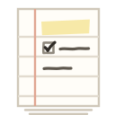
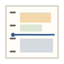

1 · Q tick
The tail of the Q is a checkmark. You plan it, then tick it off.

2 · Highlighter
The Q gets the same yellow highlighter stroke as your top three to-dos.
3 · Ruled page
A page torn from the pad: the red margin line, a highlighted top line and a ticked box.

4 · Clock Q
A clock face whose ochre tail turns it into a Q. Your time, planned.
5 · Day blocks
A tiny schedule: sticky-note events and the pencil line that marks now.
